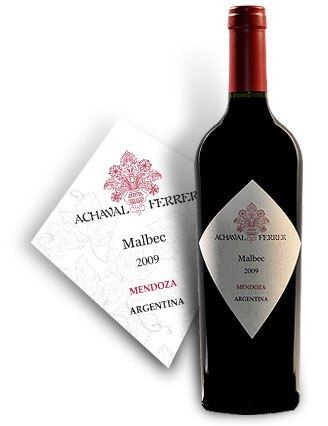
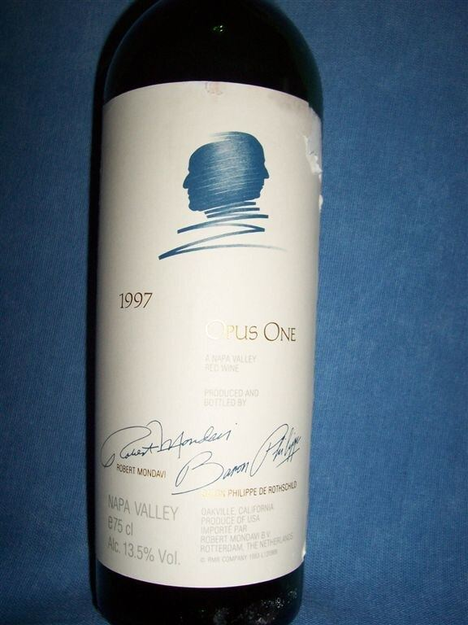

ROSSO
Uva rossa originaria di Cahors che ha trovato a Mendoza una seconda patria ed è diventata il vitigno simbolo dell’Argentina.

Il Malbec proviene dalla Francia sud-occidentale, in particolare dalla zona di Cahors, nella valle del Lot, dove è tradizionalmente chiamato Côt o Auxerrois. Le analisi del DNA hanno dimostrato che è figlio di Prunelard e Magdeleine Noire des Charentes, il che lo rende fratellastro del Merlot. Era un vitigno importante a Bordeaux prima della fillossera, ma vi si è molto ridotto dopo le gelate del 1956.
Germoglia presto e matura in epoca media; è sensibile a colatura, peronospora e gelate primaverili. Ha bisogno di sole e calore per maturare bene. Nel clima secco, soleggiato e d’altura di Mendoza ha trovato condizioni ideali: le uve restano sane e la forte escursione termica tra giorno e notte favorisce colore e freschezza.
Dà vini molto scuri, spesso con riflessi violacei, di corpo medio o pieno, con tannini decisi ma maturi. In Argentina prevalgono prugna, mora, ciliegia nera e note floreali di violetta, con sfumature speziate e, dopo l’affinamento in rovere, vaniglia e cioccolato. A Cahors i vini tendono a essere più tannici, terrosi e austeri, con buona capacità di invecchiamento. Si usa anche in uvaggio e per rosati.
L’Argentina ne possiede la superficie più estesa al mondo, soprattutto a Mendoza (Luján de Cuyo, Valle de Uco), con impianti anche a San Juan, Salta e in Patagonia; l’arrivo del vitigno nel paese è solitamente attribuito all’agronomo francese Michel Aimé Pouget, a metà Ottocento. In Francia è l’uva principale dell’AOC Cahors ed è coltivato in misura minore nella Loira e a Bordeaux. Si trova inoltre in Cile, negli Stati Uniti (California, Washington), in Australia, Sudafrica e Nuova Zelanda.
In Argentina è il compagno classico dell’asado e delle carni alla griglia; si abbina anche a empanadas, stufati e formaggi stagionati. I Cahors, più tannici, accompagnano bene il confit d’anatra e il cassoulet. Si serve tra 16 e 18 °C.



